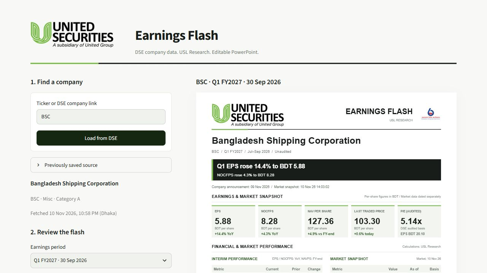
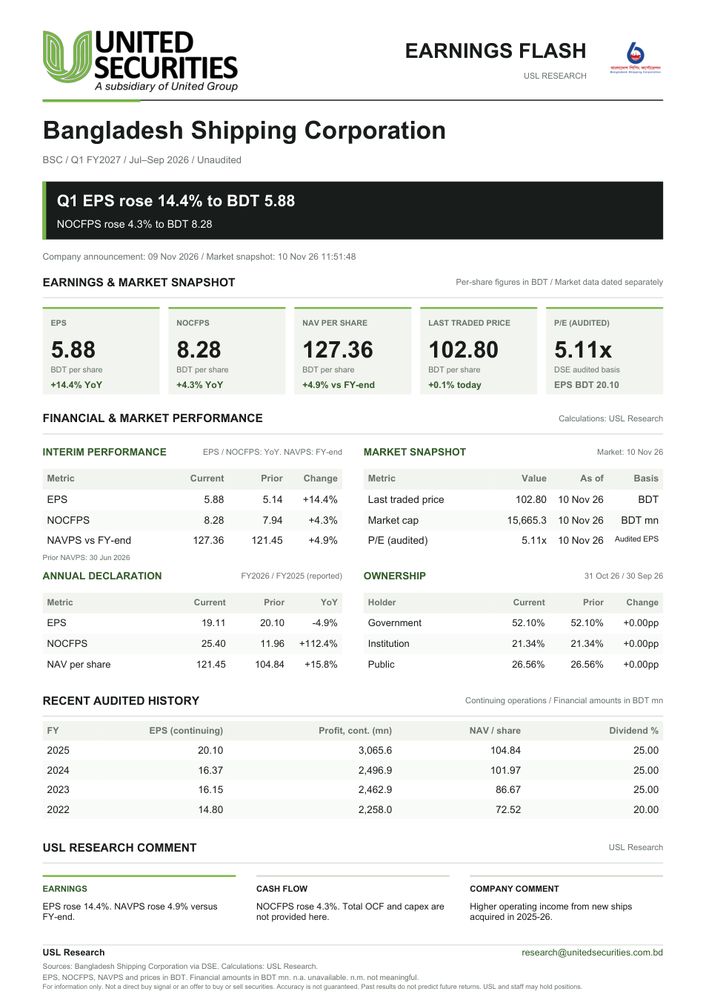

Earnings Flash Generator
A local application that converts Dhaka Stock Exchange company disclosures into consistent, editable PowerPoint and searchable PDF earnings summaries.
Python · Streamlit · Requests · XML / JSON · ReportLab · Pillow · C# · Git
The problem
Preparing an earnings flash requires collecting public disclosures, checking comparable periods and transferring figures into a consistent report. Manual copying makes the process repetitive and can mix quarterly and cumulative results.
What I built
- DSE ticker lookup and structured financial-disclosure parsing.
- Explicit period and unit checks, with missing figures kept distinct from zero.
- Automatic issuer-logo lookup with an optional saved replacement.
- Rule-based earnings commentary drawn from matching public disclosures, with editable wording.
- Editable PowerPoint and searchable PDF exports using one approved report layout.
- A Windows launcher and a regression suite with 46 checks.
Application preview

Report preview

Design choices
The application runs locally without an AI service or API key. Period comparisons use fixed rules rather than estimating missing financial totals. Downloads and exports remain on the user's machine.
Source and access
The complete application repository is private. Source and implementation details can be shared with reviewers on request. This page is a read-only case study: it has no live app, uploads, backend or financial-data connection.